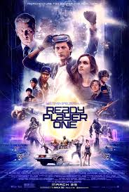
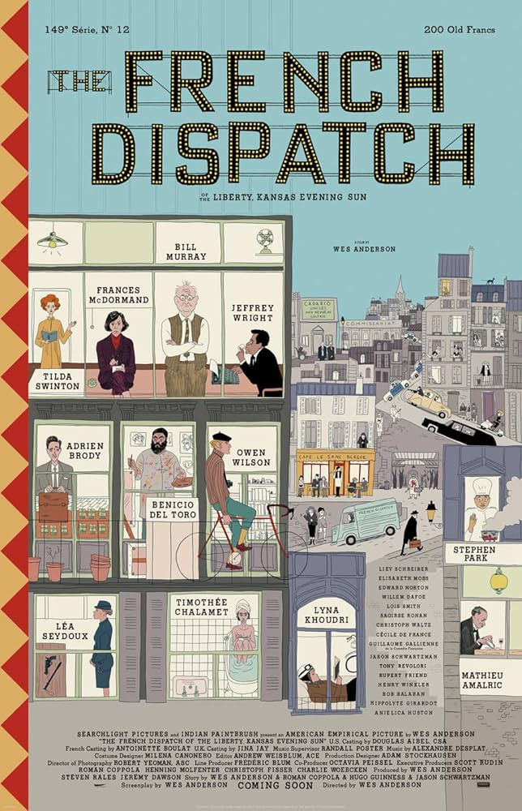
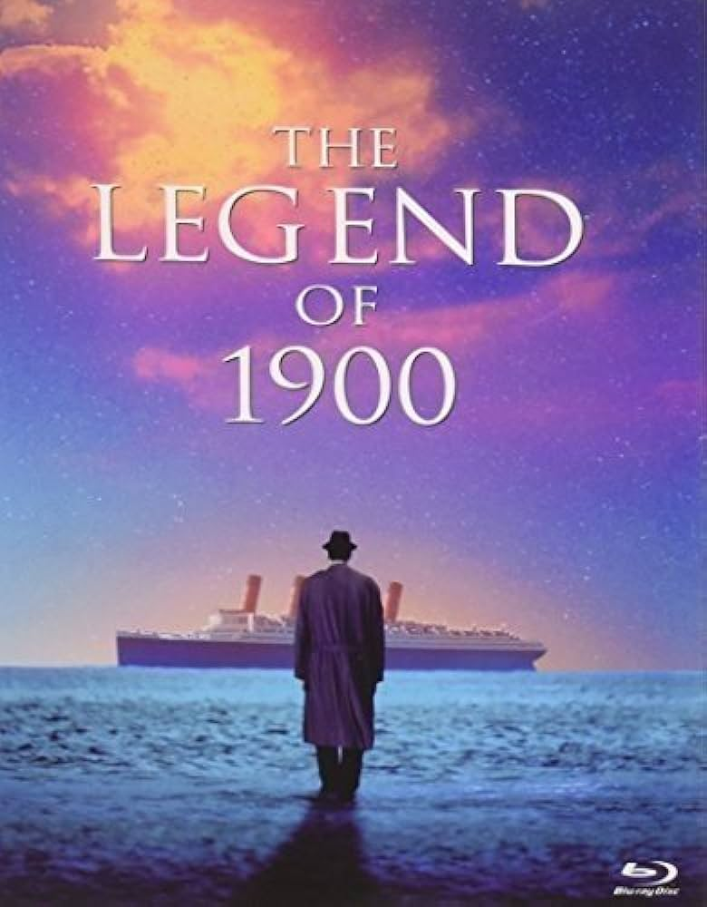
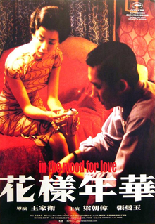

Ready Player One
The plot is amazing and very fantasy. Def my type.
The French Dispatch
The movie plot is divided into 3, very the interesting.
The Legend of 1900
Musical and dramatical movie. Loved it.
LalaLand

Also a musical movie, talks about the reality and dreams of life, worth pondering.
In the Mood of Love
Wong Kar Wai's aesthetics always gets me, and this is the first ever movie that I watched. Fell in love with his colours and mood.